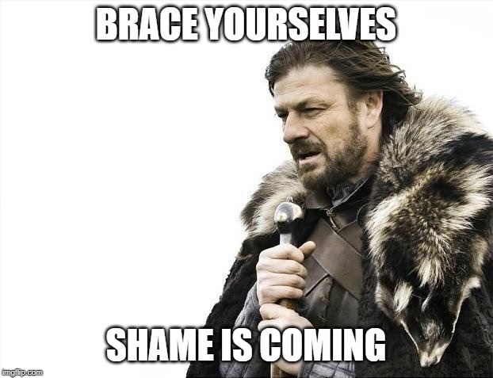
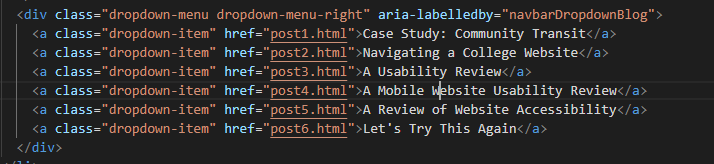

The Work Ahead
For the past few weeks we have been studying accessibility online and it has come to my attention that some of the features on several of my pages have not been the most...accessible. Mostly it comes down to ignorance (you can't improve on what you don't know, right) but also laziness.
Brace yourselves, shame is coming!
 Brace Yourselves: Shame is ComingLabel, Label, Label EVERYTHING!!
Image of the drop-down menu for my user science journal. The posts have been incorrectly labeled as 'post 1, post 2, etc.'What happens when things aren't labeled:
Bad labeling (or lack of labeling) is the worst offender for accessibility. It is something so simple: it makes sense to label your componants, it's just good design.
When things aren't labeled correctly, it can be very difficult for someone using a screenreader to effectively use a website.
In Short, best practice is to label:
- Alt-Tags (on images)
- Links
- Captions
- Any image that contains important information
The Fix:
I went back over my journal and made sure to update the labels, especially in the navigation bar (shown below).
 Image of the edited code for the drop-down menu for my user science journal. The posts have been labeled as the name of the article they go to.Alt-Tags
I had a nasty habit of not labeling my alt-tags for images, I would label the caption, but I never thought that the alt-tag would be where someone might look for information first
Before:
Screenshot of the alt tags for a previous post, the tag is brief, it just says 'Computer Science Homepage'After
"Screenshot of the coded alt tag updatesUsing alt-tags is a minor inconvience while building a website however, it is much easier to put in while you're building rather than retro-fitting the tags in later.
I felt really silly going back to fix something so basic, especially after I told myself I would just "Code this fast" for the assingment. It ended up taking way more time to fix it in the long run.
Alt tags are imperative to users who are using screen readers; especially when the images provide information vital to understand the page.
Using Tools
The Audit:
Using tools such as Lighthouse and WAVE made it much easier to locate potencial issues and fix them.
Results of Lighthouse AuditThey are not a perfect fix however, so there is some work required to double-check the tool. WAVE will take a deep look into your code and find possible errors.
WAVE finds broken linksThe tools are an excellent place to start. They will point out potencial issues and give you advice on how to fix them. But the developer is the one who has to go through their code after to fix it.
Conclusion
Accessibility is easier said than done. If you have never thought about how someone might be having issues navigating your website, it can be really hard to understand why it is so important to make sure that your site is easily accessable.
It took some work (not a lot) to add the features needed. It was mostly an exercise in frustration. All of these things are really easy to do right at the beginning but are very tedious to add in later.
In Short:- Make sure to label well with alt-tags.
- Label Links with where they are going.
- Be sure to fill captions with useful information.
With just a few easy changes, any site would be much more accessable for all users.